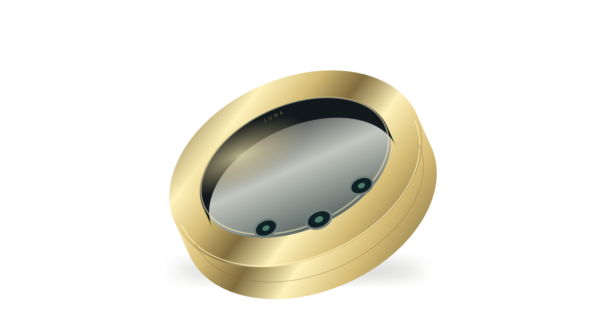
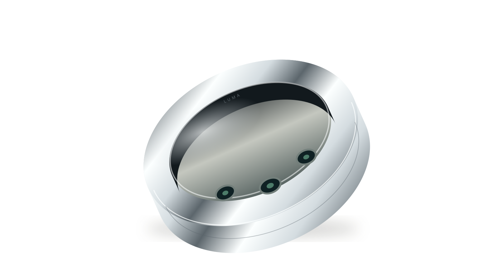
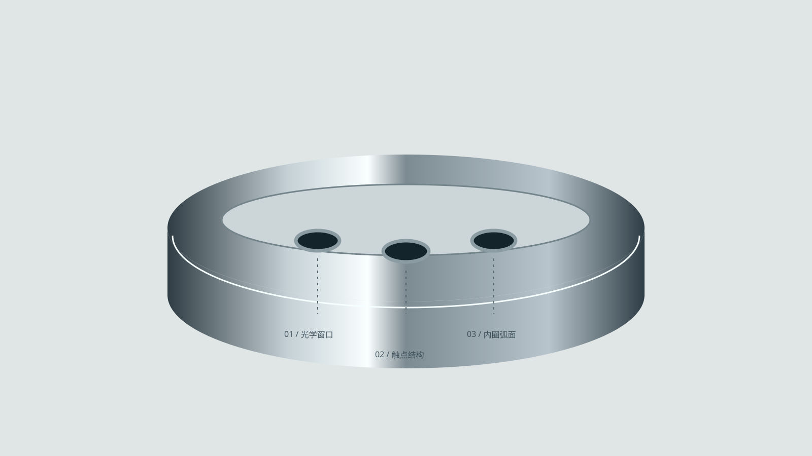

A LITTLE CLOSER TO YOURSELF.
Your rhythm.
Beautifully
understood.
一枚轻巧的指环，陪你留意睡眠，
也留意没有被日程写下的日常。


NOT ANOTHER THING TO DO.
More room
for being.
从一个从容的清晨开始。把昨天看清楚一点，把今天安排得松弛一点。信息可以是提醒，但不应成为新的压力。
记录是理解的起点，不是身体的成绩单。MADE TO LIVE WITH YOU
Technology,
with a softer side.
圆润内圈、连续的金属表面。
把复杂留给内部，把轻盈留给日常。


SMALL DETAILS. CONSIDERED.
Feel the ring.
Not the technology.
内圈窗口与触点嵌入连续弧面。你看到的是产品结构概念，而不是实物传感器验证或健康功能证明。
A WEEK, AT YOUR OWN PACE.
How did
you feel?
选择一个固定演示日期，读一条睡眠与日常记录。比起一个分数，你对自己的感受同样值得被留下。
2026年11月16日 · 固定演示记录
- 休息时段
- 23:20 – 07:10
- 主观感受
- 醒来舒展
昨天早点放下了手机。清晨醒来时，窗边的光刚刚好。
Not a score to chase.
A rhythm to return to.